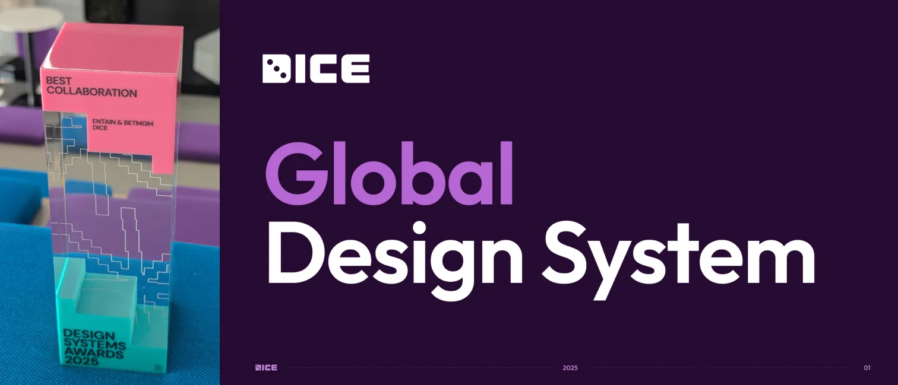
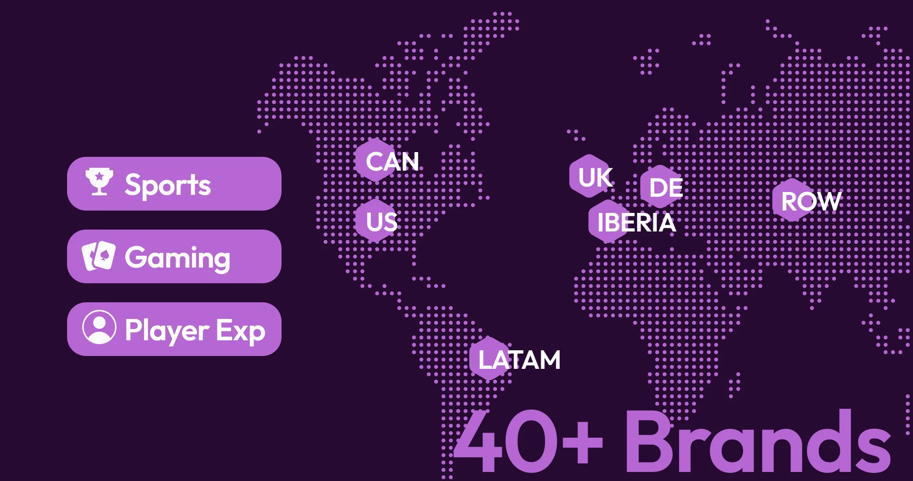
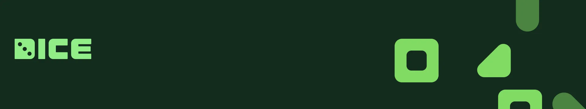
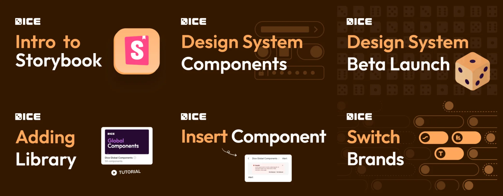

40+ brands under one design system
Markets kept their own systems for their own needs. I put them under Dice, one umbrella shared with BetMGM: shared tokens, one governance model, ambassadors who owned their parts and an education hub.
- Team
- 5 direct reports, 8 matrixed ambassadors
- Markets
- Canada, Iberia, LATAM, with BetMGM for the US and the rest of the world
- Toolchain
- Figma, Storybook, zeroheight, Jira

Situation
40+ brands, built in silos
The brands spanned three product areas: Gaming, Sports and Core. BetMGM and its sister brands covered the US and the rest of the world. Each market had different needs, and teams duplicated work. Rollouts were slow, and brands drifted apart. A tech-stack change meant the old system had to start again.

Task
One umbrella, without one owner of everything
Entain and BetMGM built Dice on the new stack. The goal was 100% adoption: every team designing with Dice. A central team could not know every market's needs, so the model had to spread ownership.

Action
The governance model: a federated system
The core
DesignOps · my 5 direct reports
Kept the structure that every brand shares.
- Tokens
- Governance
- Toolchain
- Accessibility
- Education
The ambassadors
8 matrixed designers
Each one owned a part of the system, by product or by market, and brought its needs into the core. They worked alongside BetMGM's team.
- By product
- By market
The markets and brands
40+ brands · Gaming, Sports, Core
Kept their own systems for their own needs, on the shared tokens.
- Canada
- Iberia
- LATAM
- US, with BetMGM
- Rest of world, with BetMGM
Action
Three decisions to get adoption
Recruit an ambassador in each region
I went after designers in Canada, Iberia and LATAM and gave each one their part of the system. The core team kept the tokens, governance, toolchain and education.
Cost: less central control, more maintenance, fewer components built for one product.
Bring in an accessibility expert
I brought an accessibility expert into the system team. Accessibility went into the core components, so no brand had to add it on its own.
Teach the tokens, then the components
I ran sessions for the whole organisation on the token structure and semantic token usage. Monthly calls covered 60+ designers, but not everyone could join. So I drove an education hub: an edited video for each foundational component, documented in zeroheight.
Cost: every component video had to be recorded and edited, on top of delivery.

Emerging markets pushed back
They needed speed and flexibility, and some of their needs differed from other markets. Their ambassadors brought those needs into the system, so the umbrella did not slow them down.
Result
Best Collaboration, zeroheight Design System Awards 2025
My team and I won it together with BetMGM. Dice put 40+ brands on one set of tokens.